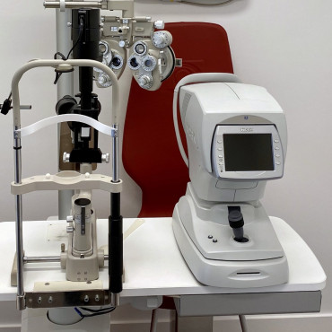
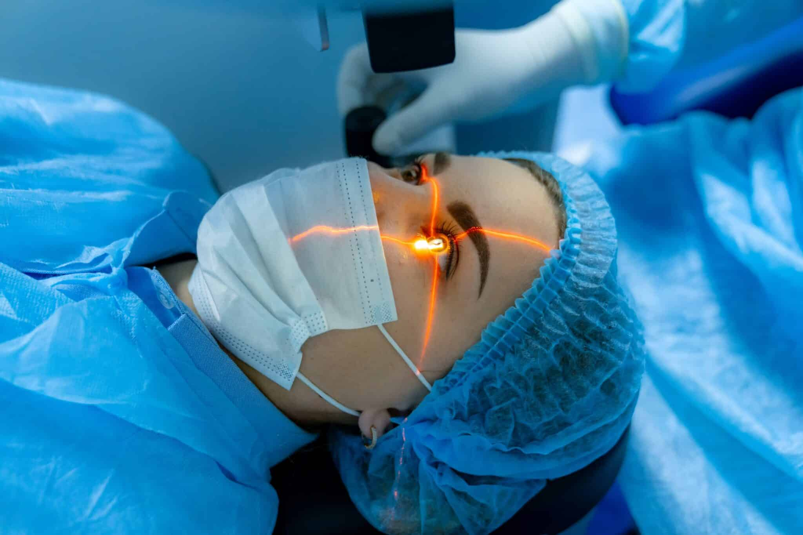
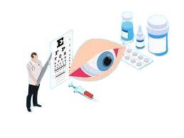
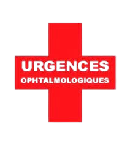

Le service d'ophtalmologie de notre clinique combine expertise médicale et technologies de pointe pour vous offrir une prise en charge complète
de votre santé visuelle. Notre équipe d'ophtalmologistes hautement qualifiés est spécialisée dans le diagnostic précoce, le traitement et la
gestion des affections oculaires, allant des troubles bénins aux maladies plus graves pouvant affecter votre vision.
Que ce soit pour un contrôle de routine, un suivi régulier, ou des consultations spécialisées, nous prenons en compte les besoins spécifiques
de chaque patient. Nos prestations incluent une gamme complète de services, tels que des examens approfondis de la vue, le traitement des
maladies oculaires chroniques comme le glaucome et la cataracte, ainsi que des interventions chirurgicales précises pour corriger divers
problèmes de vision.
Nous veillons à ce que chaque patient bénéficie de soins personnalisés et adaptés à son état de santé. La technologie avancée de nos équipements
permet des diagnostics rapides et précis, ainsi qu'une intervention rapide en cas d'urgence. Notre priorité est non seulement de traiter les
maladies oculaires, mais aussi de vous aider à maintenir une bonne santé visuelle à long terme.
En collaborant étroitement avec nos patients, nous vous garantissons un suivi attentif et continu, tout en vous offrant des conseils pratiques
pour protéger et améliorer votre vision au quotidien. Notre engagement est de vous fournir des traitements efficaces, en toute sécurité, afin
de préserver la qualité de votre vue et d'améliorer votre bien-être général.
Nos prestations incluent

Examens de la vue
Pour évaluer votre vision et détecter d'éventuels troubles.
Chirurgie réfractive
Correction des défauts de vision tels que la myopie, l'hypermétropie et l'astigmatisme.


Traitement des maladies oculaires
Prise en charge des affections comme la cataracte, le glaucome, et la dégénérescence maculaire.
Urgences ophtalmologiques
Soins rapides pour les blessures oculaires et autres urgences liées à la vue.

Un ophtalmologiste est un médecin spécialisé dans le diagnostic, le traitement et la gestion des maladies et troubles oculaires. Il est qualifié pour réaliser des examens de la vue, prescrire des lunettes ou des lentilles de contact, et effectuer des interventions chirurgicales sur les yeux.
Vous devriez consulter un ophtalmologiste si vous ressentez des symptômes tels qu'une vision floue, des douleurs oculaires, des maux de tête fréquents, des yeux rouges ou irrités, une sensibilité à la lumière, ou des taches et flashes de lumière dans votre champ de vision.
Les traitements varient selon le trouble oculaire. Ils peuvent inclure le port de lunettes ou de lentilles de contact, des traitements médicamenteux, des interventions chirurgicales telles que la chirurgie au laser pour corriger la vision (LASIK), ou la chirurgie de la cataracte pour améliorer la clarté de la vision.
Bien qu'il ne soit pas toujours possible de prévenir toutes les maladies oculaires, adopter des habitudes de vie saines comme une alimentation équilibrée, le port de lunettes de soleil pour protéger vos yeux des UV, ne pas fumer, et passer des examens de la vue réguliers peut aider à maintenir la santé de vos yeux.